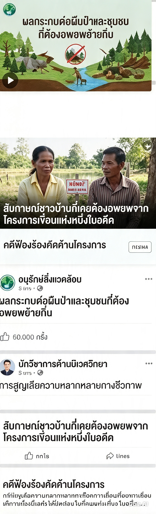

แก้มและปอเรียนอยู่ห้องเดียวกันชั้นมัธยมศึกษาปีที่ 6 ได้รับมอบหมายงานวิชาสังคมศึกษาให้ค้นคว้าเรื่อง "ควรมีการสร้างเขื่อนใหม่ในจังหวัดหรือไม่" เพื่อนำมาอภิปรายในชั้นเรียนสัปดาห์หน้า ทั้งสองนั่งข้างๆ กันในห้องสมุดและพิมพ์คำค้นเดียวกันเป๊ะๆ ลงในโทรศัพท์ของตัวเองในเวลาไล่เลี่ยกัน หลังจากค้นหาไม่ถึงนาที ทั้งคู่เงยหน้าขึ้นมาเทียบหน้าจอกันแล้วก็ต้องแปลกใจ เพราะผลลัพธ์ที่ปรากฏบนหน้าจอของแต่ละคนไม่เหมือนกันเลย ครูอ้อยเดินผ่านมาเห็นทั้งคู่เถียงกันจึงขอให้ทั้งสองคนโชว์หน้าจอผลการค้นหาให้ดู และสังเกตว่าแก้มเคยกดถูกใจเพจอนุรักษ์สิ่งแวดล้อมหลายเพจในสัปดาห์ก่อนหน้า ส่วนปอเคยกดถูกใจเพจข่าวเศรษฐกิจและดูคลิปวิศวกรรมโยธาอยู่บ่อยครั้งเช่นกัน

สถานการณ์ที่ 14: ผลลัพธ์จากการค้นหาข้อมูล
แก้มและปอเริ่มตระหนักว่าอาจไม่มีใคร "ผิด" หรือ "ถูก" ไปเสียทีเดียว แต่สิ่งที่แต่ละคนเห็นถูกคัดกรองมาโดยระบบที่มองไม่เห็น
ข้อ 1 — ข้อความใด "จริง" หรือ "ไม่จริง"?
พิจารณาแต่ละข้อความว่า "จริง" หรือ "ไม่จริง" จากสถานการณ์ของแก้มและปอ
| ข้อความ | จริง | ไม่จริง |
|---|
ข้อ 2 — จับคู่แนวทางกับผลลัพธ์
จับคู่แนวทางในการค้นหาหรือติดตามข้อมูล (ก-ง) กับผลลัพธ์ที่แนวทางนั้นช่วยให้เกิดขึ้น ซึ่งจะช่วยให้แก้มและปอเห็นมุมมองที่หลากหลายมากขึ้น